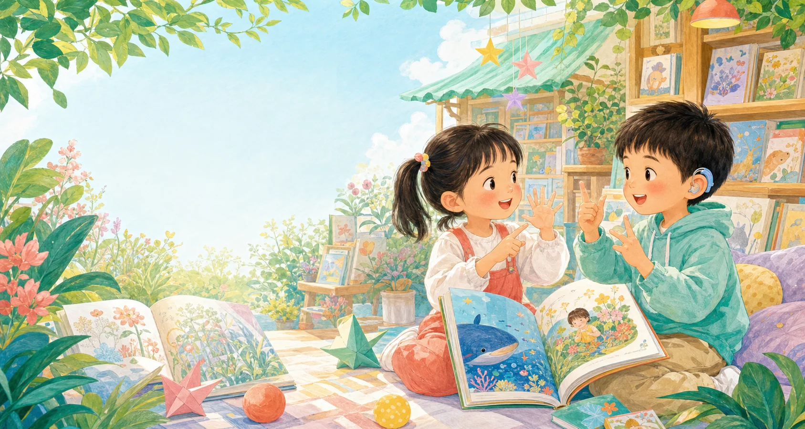

指尖有光
听障儿童手语绘本系列画面突出手部、表情与视觉线索，纸质故事连接审核后的动态手语伴读。
查看15本分龄书架 →统一母品牌、分系列设计。首期成果与未来规划分开展示，让项目既有落地样品，也有清楚的扩展路线。
画面突出手部、表情与视觉线索，纸质故事连接审核后的动态手语伴读。
查看15本分龄书架 →围绕可触摸轮廓、材质对比、盲文信息与音频引导开展概念验证。
当前为产品蓝图，尚未作为成品发布关注自主选择、环境参与与便利操作，避免把孩子写成被帮助的配角。
当前为概念选题，后续开展需求调研采用低刺激画面、重复结构与分步认知，让故事节奏更清楚、更易跟随。
将依据专业评估和试读反馈开发年龄仅作初步选书参考，正式出版前还需结合目标儿童试读表现继续调整。
一个清楚动作或日常事件，短句、重复和强视觉线索，由成人陪读建立共同注意。
看懂一个动作围绕愿望、受阻、选择和结果展开，让孩子理解连续画面与人物情绪。
读懂一段关系加入多步因果、同伴协商和自主判断，逐步过渡到更独立的图文阅读。
完成一次判断
先把一个系列做透，再复制方法手语首先服务于听障儿童的沟通与阅读需要；在专业人员个别评估下，它也可能作为部分有沟通支持需要儿童的辅助沟通方式之一。我们不把适用范围夸大，而是从最明确的目标用户和可验证场景开始。

小语负责欢迎、提示、鼓励和陪读，让不同页面像同一个完整品牌。涉及规范手语动作时，仍以经过专业审校的真人动态示范为准，小语不会冒充手语教师。
和小语开始试读首期重点是把调研、产品、成本、渠道和现金流逐步验证清楚，用经营结果说明项目价值。
访谈目标家庭，完成竞品、价格与使用场景分析。
用三本真实作品验证故事和数字试读能力。
从预售或小批量开始，用真实付款校准产品。
稳定销售后扩充主题，并验证套装与数字服务。
把成熟方法延展到另外三条产品线。
长期展望：只有在经营稳定、版权和专业审校机制成熟后，才考虑从可承受预算中开展少量绘本赠阅；社会价值建立在产品长期活得下去的基础上。